Сглаживающие фильтры
Пульсации вносят помехи в работу аппарата, который питается от БП. Кроме того, они делают невозможной работу стабилизаторов ввиду того, что в интервалах между полуволнами (абсолютная синусоида) напряжение падает практически до нуля. Рассмотрим некоторые виды сглаживающих фильтров.
Пассивные фильтры
Емкостной фильтр
Емкостной фильтр представляет собой конденсатор большой емкости, который включается параллельно нагрузочному резистору Rн. Конденсатор обладает большим сопротивление постоянному току и малым сопротивлением переменному току. Рассмотрим работу фильтра на примере схемы однополупериодного выпрямителя (рис. 1, а).
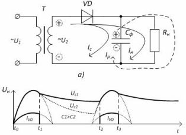
Рис. 1 - Однофазный однополупериодный выпрямитель с емкостным фильтром:
а) схема б) временные диаграммы работы
При протекании положительной полуволны во временном промежутке t0 – t1 (рис. 1, б) протекает ток нагрузки (ток диода) и ток заряда конденсатора. Конденсатор заряжается и в момент времени t1 напряжение на конденсаторе превышает спадающее напряжение вторичной обмотки – диод закрывается и во временной промежуток t1–t2 ток в нагрузке обеспечивается разрядом конденсатора. Т.о. ток в нагрузке протекает постоянно, что значительно уменьшает пульсации выпрямленного напряжения.
Чем больше емкость конденсатора Сф, тем меньше пульсаций. Это определяется време-нем разряда конденсатора - постоянной времени разряда τ = СфRн.
При τ > 10 коэффициент сглаживания q определяется по формуле:
q = 2πfсmСфRн,
где fс – частота сети,
m – число полупериодов выпрямленного напряжения.
Емкостный фильтр целесообразно применять с высокоомным нагрузочным резистором Rн при небольших мощностях нагрузки.
Индуктивный фильтр
Индуктивный фильтр (дроссель) включается последовательно с Rн (рис. 3, а). Индуктивность обладает малым сопротивлением постоянному току и большим переменному. Сглаживание пульсаций основывается на явлении самоиндукции, которая изначально препятствует нарастанию тока, а затем поддерживает его при уменьшении (рис. 2, б).
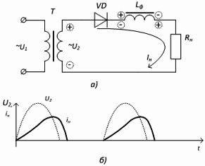
Рис. 2 - Однофазный однополупериодный выпрямитель с индуктивным фильтром:
а) схема, б) временные диаграммы работы
Индуктивные фильтры применяют в выпрямителях средней и большой мощностей, т. е. в выпрямителях, работающих с большими токами нагрузки.
Коэффициент сглаживания определяется по формуле:
q = 2πfсmLф/Rн,
Работа емкостного и индуктивного фильтра основана на том, что во время протекания тока, потребляемого из сети, конденсатор и катушка индуктивности запасают энергию, а когда тока от сети нет, либо он уменьшается, элементы отдают накопленную энергию, поддерживая ток (напряжение) в нагрузке.
Многозвенные фильтры
Многозвенные фильтры используют сглаживающие свойства и конденсаторов и катушек индуктивности. В маломощных выпрямителях, у которых сопротивление нагрузочного резистора составляет несколько кОм, вместо дросселя Lф включают резистор Rф, что существенно уменьшает массу и габариты фильтра.
На рисунке 3 представлены типы многозвенных LC- и RC-фильтров.
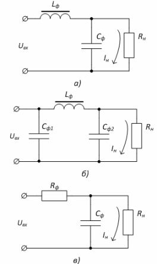
Рисунок 3 – Многозвенные фильтры:
а) Г - образный LC-фильтр , б) П-образный LC-фильтр , в) RC-фильтр
Резистивно-емкостные фильтры
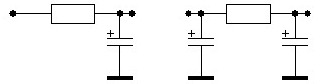
Рис. 4 - Резистивно-емкостные фильтры
Резистивно-емкостные фильтры (рис. 4) характеризуются сравнительно большим падением напряжения. Это связано с применением в них резистора. Поэтому для работы с токами более 500 мА такие фильтры не подходят ввиду больших потерь и рассеиваемой мощности. Резистор рассчитывается следующим образом
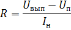
где:
Uвып – выходное напряжение выпрямителя,
Uп – напряжение питания нагрузки,
Iн – ток нагрузки.
Индуктивно-емкостной фильтр
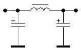
Рис.5. Индуктивно-емкостной фильтр
Индуктивно-емкостные фильтры характеризуются сравнительно высокой сглаживающей способностью, но уступают другим по массогабаритным параметрам. Основная идея индуктивно–емкостного фильтра в соотношении реактивных сопротивлений его компонентов XС << Rн << XL , т.е. фильтр должен обладать хорошей добротностью. Сам фильтр рассчитывается по следующей формуле
q=(m2πf)2LфCф - 1
где:
q – коэффициент сглаживания
m – фазность
f – частота
Lф - индуктивность дросселя
Cф – емкость конденсатора.
В любительских условиях вместо дросселя можно использовать первичную обмотку трансформатора (ни того, от которого все питается), а вторичную замкнуть.
Активные фильтры
Активные фильтры применяются в тех случаях, когда пассивные фильтры не годятся по массогабаритным или температурным параметрам. Дело в том, что, как уже говорилось, чем больше ток нагрузки, тем больше емкость сглаживающих конденсаторов. На практике это вытекает в необходимость применения громоздких электролитических конденсаторов. В активном фильтре используется транзистор в схеме эмиттерного повторителя (каскад с общим коллектором), поэтому сигнал на эмиттере практически повторяет сигнал на базе (рис. 6)
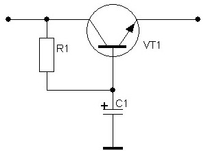
Рис. 6 - Активный фильтр
Цепь R1C1 рассчитывается как резистивно – емкостной фильтр, только в качестве потребляемого тока берется ток в цепи базы
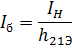
.Однако, как видно из формулы, режим фильтра (в том числе и коэффициент сглаживания) будет зависеть от потребляемого тока, поэтому его лучше зафиксировать (рис. 7)
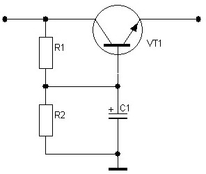
Рис. 7 - Активный фильтр
Схема работает при условии, что IR2>>Iб , при чем выходное напряжение будет составлять примерно 0,98Uб из-за просадки напряжения в повторителе. За сопротивление нагрузки принимаем R2.
Помехозащитные фильтры
Надо сказать, что радиопомехи могут проникать не только из сети в прибор, но и из прибора в сеть. Поэтому оба направления следует защищать от помех. Особенно это касается импульсных БП. Как правило, это сводится к подключению конденсаторов небольшой емкости (0,01 – 1,0 мкФ) параллельно цепи, как это показано на рис. 8.
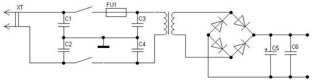
Рис. 8
Как и в случае со сглаживающими фильтрами, помехозащитные фильтры работают при условии, что емкостное сопротивление конденсаторов на частоте возникновения помехи много меньше сопротивления нагрузки.
Возможно, что помеха возникает ни от спонтанного перепада тока в сети или прибора, а от постоянной «вибрации». Это относится, например, к импульсным БП или передатчикам в телеграфном режиме. В этом случае может потребоваться еще и индукционная развязка (рис. 9).
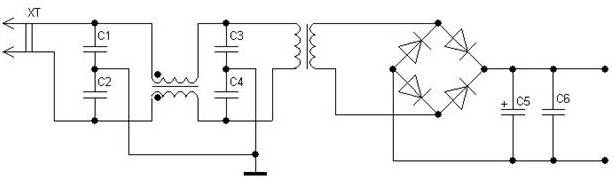
Рис.9 - Индукционная развязка
Однако конденсаторы должны быть подобраны так, чтобы не возникал резонанс в обмотках дросселей и трансформаторов.